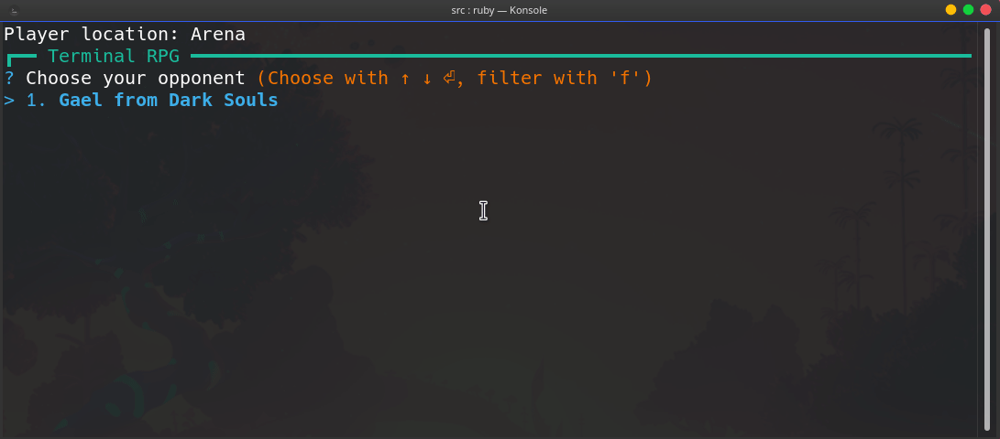

Pathfinding Simulator
Pathfinding Simulator is a terminal-based pathfinding simulator written in Ruby.
Terminal RPG
Terminal RPG is a terminal-based role-playing game written in Ruby.

Pathfinding Simulator is a terminal-based pathfinding simulator written in Ruby.
Terminal RPG is a terminal-based role-playing game written in Ruby.